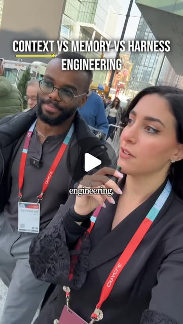
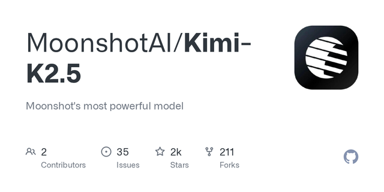

Why Your Agent Sucks: Architecture Patterns That Actually Work
Try It — Action Sketch
Audit your agent's context window usage → separate context (ephemeral) from memory (persistent) from harness (structural) → implement retrieval layer (Onyx or similar) → add tool-use via MCP → test with Claude Code as the orchestrator → measure task completion, not conversation quality.
Connected Posts (6)



Prompt system — run this yourself
Pasteable into Claude Code, Claude, or any agent. One-shot for the whole result, step prompts when you want to steer. Every step carries its own audit; the gap audit makes the agent find and fill what it missed.
Mission. Take one real agent you own and rebuild it around a clean split of context (what the model sees this turn), memory (what persists and how it is retrieved, updated and forgotten) and harness (the code that runs the loop, tools and guardrails), then prove the change with a task-completion eval at a fixed model. For engineers whose agent works in demos and fails in use. Done means: a held-out task suite shows a measured completion gain over the original agent at the same model, with ablations showing which layer caused it.
1 · Deeper, not bigger
- What a top professional would do (that you didn't ask for): An agent engineer would not swap models first. They would instrument the current agent, collect failing traces, and classify each failure as context (wrong or missing information in the window), memory (lost or stale across sessions), harness (bad loop, tool errors, no recovery) or model (genuinely beyond capability). They would build an eval set from those failures before changing anything. They would change one layer at a time and keep the model fixed so gains are attributable. They would design tool outputs for the model, not for humans - the angus.sewell point that agents see text from tool calls, not dashboards.
- Rawest material to start from: 1) Your agent's own traces: full prompts, tool calls, tool outputs and final results for at least 50 real runs. 2) The Meta-Harness paper and code (the harness-optimizing system howard.mov cites; find the preprint and repo and check the 'up to 6x' figure against its tables). 3) Richmond Alake's agent memory material (the DeepLearning.AI course on agent memory) for memory operations: store, retrieve, update, forget. 4) Anthropic's engineering posts on building effective agents and context engineering. 5) onyx-dot-app/onyx source for its retrieval and connector design. 6) Kimi K2.5 model card on Hugging Face (moonshotai) if you test an open-weights backend. 7) Public agent benchmarks for calibration: SWE-bench Verified, tau-bench, Terminal-Bench.
- Methods and tools: Tracing with OpenTelemetry or Langfuse; a failure taxonomy spreadsheet; an eval harness (Inspect AI, promptfoo, or a pytest suite) with pass/fail graders and pass@k; context accounting per turn (tokens by source: system, tools schema, history, retrieved, tool output); memory store with explicit schema (episodic events, semantic facts, procedural skills) and retrieval scoring; MCP servers for tools with typed, compact outputs; Onyx or a minimal pgvector or SQLite-FTS retriever as the baseline; ablation runs flipping one layer at a time.
- What proves it right: A held-out task suite drawn from real failures, graded by deterministic checks (tests pass, file matches, API state correct), run with the same model across original vs rebuilt agent, at least 3 seeds per task. Optional calibration on a public benchmark subset (tau-bench or SWE-bench Verified sample). A user who runs the rebuilt agent on their own work for a week and reports completion vs before.
Rewritten prompt — ask for exactly that:
You are an agent engineer. Do not change the model. Take my agent at <repo path> and: 1) instrument it to log full traces (prompt by section, tool calls, tool outputs, tokens per section); 2) collect 50 real runs and classify every failure as context, memory, harness or model; 3) build a held-out eval of 30 tasks from those failures with deterministic graders; 4) baseline the current agent at 3 seeds per task; 5) rebuild in three separable layers - context (per-turn budget by section, compact tool outputs designed for the model, retrieval instead of dumping), memory (explicit store/retrieve/update/forget with a schema, persistent across sessions), harness (loop with step limits, error recovery, verification step, guardrails); 6) run ablations adding one layer at a time; 7) report completion rate, cost and latency per variant with confidence intervals. Test Onyx as the retrieval layer against a simple baseline. Check the Meta-Harness 'up to 6x' claim against the paper's own tables and say what conditions it holds under.
2 · One-shot prompt
ROLE: You are an agent engineer. Stance: model upgrades are the last lever; most failures are context, memory or harness, and you prove which with traces and ablations. CONTEXT: Source posts: howard.mov - 'better models won't fix your agent'; the harness controls what the model sees, remembers and does, and Meta-Harness, a harness for improving harnesses, stores full source code and execution logs instead of compressed summaries and lets an agent rewrite the harness, claiming performance changes 'up to 6x' and beating hand-designed systems on coding benchmarks. lindavivah with Richmond Alake: context engineering optimizes signal to noise in the window; memory engineering is how agents store, retrieve, forget and evolve information; harness engineering is the code and scaffolding around the model. chase.h.ai: an agentic OS with Claude Code as engine, Obsidian memory, Google Workspace connected, skill packs, a dashboard. marc.kaz: onyx-dot-app/onyx - self-hostable agentic RAG, deep research, custom agents, 50+ connectors. angus.sewell: agents see tool text, not dashboards; build AI-first data layers that pre-summarize raw tables. 6ab3: Kimi K2.5, open multimodal agentic model, modified MIT license. HARD CONSTRAINTS: The model stays fixed across all compared variants. Every change is measured on the held-out suite. Graders are deterministic where possible; LLM graders only with a rubric and spot-checked by a human. No production data leaves your environment; secrets never enter prompts or logs. Destructive tools (delete, send, pay) require a confirmation step in the harness. DELIVERABLES: 1. traces/: 50+ real runs with per-section token accounting. 2. FAILURES.md: taxonomy table (context, memory, harness, model) with counts and example trace ids. 3. eval/: 30 held-out tasks with graders, runnable with one command, 3 seeds each. 4. BASELINE.md: original agent completion, cost, latency with intervals. 5. The rebuilt agent: context/ (budgeter, tool-output compactors, retrieval), memory/ (schema, store, retrieve, update, forget), harness/ (loop, step cap, retries, verification, guardrails), tools exposed via MCP. 6. ABLATION.md: original, +context, +memory, +harness, all three - completion, cost, latency. 7. RETRIEVAL.md: Onyx vs a simple baseline retriever on retrieval questions from the eval. 8. CLAIMS.md: Meta-Harness 6x claim checked against the paper; Kimi K2.5 as backend tested only if time allows and only as a separate arm. BUILT-IN GAP ANALYSIS: Maintain GAPS.md: failure classes not addressed, tasks still failing after rebuild and why, layers with no measurable effect, grader weaknesses, claims not verified. Fill the top items before finishing. SELF-QUESTIONS: What share of failures were truly model-limited? Did I hold the model and temperature fixed? Are my graders checking the outcome, or the transcript's claims? Does memory retrieve the right item, and does it ever retrieve a stale one? Did compact tool outputs drop information the model needed? Did the harness's verification step catch real errors or only add cost? Would the gains survive a different task distribution? STOP CONDITIONS: Stop when ABLATION.md has all five variants at 3 seeds and GAPS.md is written. Stop and ask if the baseline completion is already above 90% (the eval is too easy) or below 10% (likely a harness bug). RETURN FORMAT: Failure taxonomy table, ablation table with intervals, retrieval comparison, the Meta-Harness claim verdict, and GAPS.md.
3 · Step-by-step prompts
Step 1 — Ground truth: instrument and collect real traces
Goal: See exactly what the agent sees and does on real work.
Pick one agent you own (a Claude Code workflow, an Agent SDK app, or a custom loop). Add tracing with OpenTelemetry or Langfuse so each run records: system prompt, tool schema size, history, retrieved content, tool outputs - each with its token count - plus tool calls, errors, retries, final output and wall time. Run it on 50 real tasks from your actual use (not synthetic). Save traces/ as JSONL. Also read the raw sources: the Meta-Harness paper and repo (record the benchmark, baseline and conditions behind the 'up to 6x' figure), Richmond Alake's memory material for the memory operations taxonomy, Anthropic's posts on building effective agents and context engineering, and the onyx-dot-app/onyx README and retrieval code. Write sources/NOTES.md with the claims each source makes and the evidence it gives.
Expect: traces/ with 50+ runs and token accounting by section, sources/NOTES.md.
Audit before moving on: Check that token sections sum to the provider-reported input tokens within 5%; fix accounting if not. Confirm no secrets in traces (grep for key patterns).
Step 2 — Classify failures and build the held-out eval
Goal: Turn failures into a task suite before changing anything.
Read every failed or degraded run in traces/. Classify each into one primary cause: context (needed info missing, buried, or crowded out; tool output too large or unreadable), memory (lost facts from an earlier session, stale or contradicting memory), harness (loop stuck, no retry on tool error, no verification, wrong stopping, unsafe action), or model (reasoning genuinely beyond capability with perfect inputs). Write FAILURES.md with counts and 2 trace ids per class. Then build eval/: 30 tasks, at least 5 per class, each with a deterministic grader (unit test, file diff, API state check, exact field match). Hold out 10 tasks you will not look at while building. Make it runnable with `python -m eval.run --variant <name> --seeds 3`. Store the held-out 10 in a separate file.
Expect: FAILURES.md with a 4-class table and eval/ with 30 graded tasks, 10 held out.
Audit before moving on: Run each grader against a known-good and known-bad output; both must grade correctly. Any task whose grader cannot be made deterministic gets a rubric and a human spot-check flag.
Step 3 — Baseline at fixed model
Goal: Measure the original agent honestly.
Pin model id, temperature and max tokens in eval/config. Run the original agent on all 30 tasks at 3 seeds. Record per task: pass/fail, tokens in and out, cost, wall time, number of tool calls, and the failure class if it failed. Compute completion rate with a 95% interval (Wilson), median cost and latency. Write BASELINE.md. If completion is above 90% the suite is too easy - add harder tasks from traces; if below 10% check for a harness bug before proceeding. Break failures down by class from FAILURES.md so later layers can be judged on the classes they target: a context fix should move context-class tasks, a memory fix should move the cross-session tasks. Also record how many failures were silent, meaning the agent declared success but the grader failed it; that number is the harness's honesty baseline and the verification step in step 6 must reduce it. Save raw per-run records to eval/results/baseline/.
Expect: BASELINE.md with completion, interval, cost and latency, and per-class failure counts.
Audit before moving on: Re-run 5 random tasks and confirm the pass/fail matches within seed variance. Confirm model id in every result record.
Step 4 — Rebuild the context layer
Goal: Give the model the right information in a budget, in a readable form.
Write context/budget.py that allocates a per-turn token budget by section (system, tools, memory, retrieval, history, tool output) and trims by priority. Replace raw tool outputs with compactors designed for the model: structured summaries with the fields the next step needs, pagination handles for detail, error messages that say what to try next - the angus.sewell AI-first data layer idea. Replace 'dump everything' with retrieval: implement a simple baseline (SQLite FTS5 or pgvector) and, separately, deploy Onyx (docker compose from onyx-dot-app/onyx) with your docs connected; compare both on the eval's retrieval-dependent tasks and write RETRIEVAL.md (recall at 5, answer accuracy, latency, ops cost). Reduce the tool schema to tools actually used in traces. Run the eval as variant +context and log tokens by section.
Expect: context/ code, RETRIEVAL.md comparing Onyx vs baseline, eval results for +context.
Audit before moving on: For 5 tasks that passed before, confirm compaction did not drop needed facts (they still pass). Compare tokens per task to baseline; flag if cost rose without completion gain.
Step 5 — Rebuild the memory layer
Goal: Persistent memory with explicit operations and a schema.
Write memory/ with three stores: episodic (what happened, with timestamps and task ids), semantic (facts about the user, project and environment, each with source and last-verified date), procedural (skills or playbooks that worked, with success counts). Implement operations: store (after task end, extract candidate memories, deduplicate), retrieve (by query with recency and relevance scoring, max N items into the context budget), update (on contradiction, keep newer with source, keep a history), forget (expire unverified facts after a set age; delete on user request). Persist to SQLite or Obsidian markdown files if you follow chase.h.ai's pattern. Run the eval as +memory alone and then +context+memory, including the memory-class tasks that span two sessions. Cap memory items injected per turn and log which were retrieved.
Expect: memory/ code with tests for each operation, eval results for both variants.
Audit before moving on: Write a test where a fact changes between sessions; the agent must use the new fact. Write a test with a planted wrong memory; record whether the agent catches it. Fail the step if stale facts win.
Step 6 — Rebuild the harness layer
Goal: A loop that recovers, verifies and stays safe.
Write harness/: a loop with a step cap and token cap per task; retry with backoff on transient tool errors and a different approach on repeated errors; a planning step for tasks over N tool calls; a verification step that runs the task's own checks (tests, a read-back of the changed state) before declaring done; confirmation gates on destructive tools; structured final output. Expose tools through MCP servers with typed inputs and compact outputs. Read the Meta-Harness repo and, if feasible, run its approach for a few iterations on your harness using your traces and eval (full code plus logs as input, not summaries); otherwise record why not. Run the eval as +harness and as all three layers, then compare silent-failure counts to baseline.
Expect: harness/ code, MCP tool servers, eval results for +harness and all-three, a Meta-Harness feasibility note.
Audit before moving on: Inject tool failures (timeouts, malformed responses) in 5 tasks and confirm recovery. Confirm destructive tools cannot run without confirmation by trying.
Step 7 — Validate against oracles and write the gap report
Goal: Attribute the gain and list what is still broken.
Run the 10 held-out tasks for the first time on baseline and all-three variants, 3 seeds each. Build ABLATION.md: original, +context, +memory, +harness, all three - completion with Wilson intervals, cost, latency, per failure class. If time allows, run a 20-task sample of a public benchmark (tau-bench or SWE-bench Verified) on original vs rebuilt for calibration. Write CLAIMS.md: the Meta-Harness 'up to 6x' figure - what benchmark, what baseline, and whether your result is consistent; whether a model swap (e.g. Kimi K2.5 as a separate arm) would have closed the same gap. Write GAPS.md: failure classes still open, tasks still failing with reasons, grader weaknesses, layers with no effect. Rank and fix the top two, then re-run only the affected tasks.
Expect: ABLATION.md, CLAIMS.md, GAPS.md with two fixes.
Audit before moving on: Held-out results must not have been seen during building; confirm by git log of eval runs. Unrun oracles are FAIL-UNRUN. Delete any claim of improvement whose interval overlaps baseline - call it not significant.
4 · Gap analysis and audit
You did not build this agent. Audit it. Read FAILURES.md, BASELINE.md, RETRIEVAL.md, ABLATION.md, CLAIMS.md, GAPS.md and the eval/ code. Enumerate every claim: failure class counts, completion rates, intervals, cost changes, retrieval metrics, the Meta-Harness verdict. Mark each VERIFIED (re-ran and matched within seed variance), UNVERIFIED (could not re-run; why), or FALSE (different result; show both). Re-run the held-out 10 tasks on the all-three variant at 3 seeds. Check the model id is identical across variants in result files. Test graders against a deliberately wrong output for 5 tasks. Plant a stale memory and see if it wins. Try a destructive tool without confirmation. Check traces and memory stores for secrets or personal data. List missing pieces (no eval in CI, no memory size cap, no cost alarm, retrieval index not refreshed, no human-in-loop path), rank by how likely each is to cause a production failure, fix the top three now, and report what you could not fix and why.
Questions the agent must ask itself before it says done:
- What share of real failures were model-limited after I fixed inputs, and how did I decide?
- Did I keep model id, temperature and max tokens identical across every variant?
- Do my graders check the actual end state, or the agent's own claim of success?
- Did compacting tool outputs remove a field the model needed on any task?
- Does memory ever return a stale fact over a newer one, and is there a test for it?
- What is the per-task token budget, and which section blows it most often?
- Did Onyx beat a simple FTS baseline enough to justify running it?
- Did the verification step catch real errors, and what did it cost in tokens?
- Are the held-out tasks truly unseen during building?
- Is the Meta-Harness 6x figure from a comparable setting, or a different benchmark and baseline?
- Which destructive tools exist, and can any run without confirmation?
- Would the gains survive a different user's task distribution?
5 · What proves it right
- Held-out 10-task suite with deterministic graders, 3 seeds, same model: rebuilt agent completion interval above the original's.
- Ablation table where each layer's contribution is measured separately on the same suite.
- Fault injection: 5 tasks with forced tool timeouts and malformed outputs recover without human help.
- Optional public calibration: 20-task sample of tau-bench or SWE-bench Verified, original vs rebuilt.
- A real user runs the rebuilt agent on their own work for a week and logs completed vs abandoned tasks against the prior week.
6 · Failure modes
- Model swap masks harness bugs. Tell: gains vanish on a cheaper model. Fix: fixed-model ablations.
- Context stuffing. Tell: tokens per turn near the window limit, key facts buried mid-context. Fix: budgeter and retrieval with priorities.
- Stale memory wins. Tell: agent uses last month's config. Fix: last-verified dates, update on contradiction, expiry.
- Graders that trust the transcript. Tell: pass rate high, user still unhappy. Fix: end-state checks.
- Over-compacted tool output. Tell: agent re-calls the same tool repeatedly. Fix: pagination handles and fields needed by the next step.
- Retrieval stack bigger than the problem. Tell: Onyx deployed, recall equal to FTS. Fix: keep the simple baseline when metrics tie.
- Benchmark claims transplanted. Tell: quoting '6x' without the benchmark. Fix: CLAIMS.md with the paper's setting.
7 · Agent direction (unattended runs)
Start by instrumenting, not rewriting: traces first, taxonomy second, eval third. Cache traces and eval results by variant and seed in eval/results/. Spawn sub-agents per layer rebuild (context, memory, harness) only after the eval exists; they touch separate directories. Keep the held-out 10 tasks in a file sub-agents cannot read until step 7. Run the eval yourself and review sub-agent code for grader tampering. Stop and ask before: sending any production data to a third-party retriever, enabling destructive tools, changing the pinned model, or deploying Onyx on a shared server. Never log secrets. If a sub-agent's layer fails its eval twice, take that layer over directly. Return ABLATION.md, FAILURES.md, CLAIMS.md and GAPS.md plus a one-paragraph verdict on which layer moved completion most.
Prompt system updated 2026-10-22 · all prompt systems · JSON